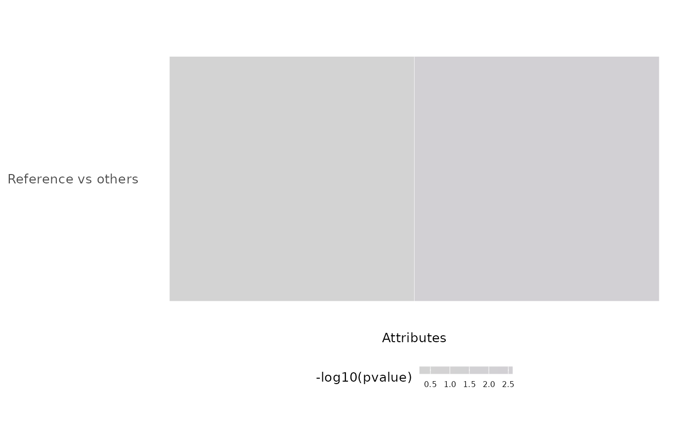

Plot -log10(p-values) of the results obtained after multiple group independence testing
Source: R/groups.R
plotGroupIndependence.RdPlot -log10(p-values) of the results obtained after multiple group
independence testing
Usage
plotGroupIndependence(
groups,
top = 50,
textSize = 10,
colourLow = "lightgrey",
colourMid = "blue",
colourHigh = "orange",
colourMidpoint = 150
)Arguments
- groups
multiGroupIndependenceTestobject (obtained after runningtestGroupIndependence())- top
Integer: number of attributes to render
- textSize
Integer: size of the text
- colourLow
Character: name or HEX code of colour for lower values
- colourMid
Character: name or HEX code of colour for middle values
- colourHigh
Character: name or HEX code of colour for higher values
- colourMidpoint
Numeric: midpoint to identify middle values
See also
parseCategoricalGroups() and
testGroupIndependence()
Other functions for data grouping:
createGroupByAttribute(),
getGeneList(),
getSampleFromSubject(),
getSubjectFromSample(),
groupPerElem(),
testGroupIndependence()
Examples
elements <- paste("subjects", 1:50)
ref <- elements[10:50]
groups <- list(race=list(asian=elements[1:3],
white=elements[4:7],
black=elements[8:10]),
region=list(european=elements[c(4, 5, 9)],
african=elements[c(6:8, 10:50)]))
groupTesting <- testGroupIndependence(ref, groups, elements)
plotGroupIndependence(groupTesting)
#> Warning: `aes_string()` was deprecated in ggplot2 3.0.0.
#> ℹ Please use tidy evaluation idioms with `aes()`.
#> ℹ See also `vignette("ggplot2-in-packages")` for more information.
#> ℹ The deprecated feature was likely used in the psichomics package.
#> Please report the issue at
#> <https://github.com/nuno-agostinho/psichomics/issues>.
#> Warning: Using `size` aesthetic for lines was deprecated in ggplot2 3.4.0.
#> ℹ Please use `linewidth` instead.
#> ℹ The deprecated feature was likely used in the psichomics package.
#> Please report the issue at
#> <https://github.com/nuno-agostinho/psichomics/issues>.
